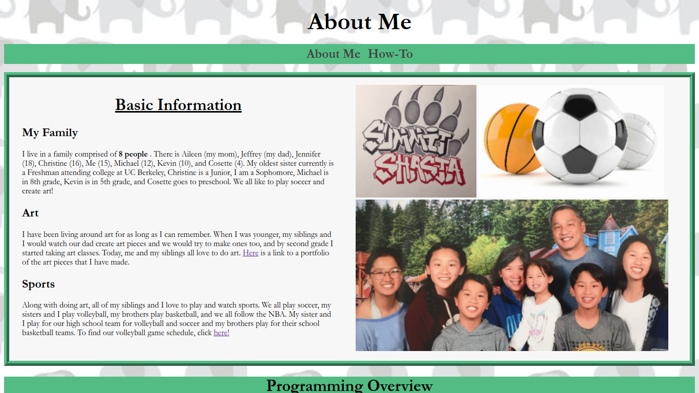
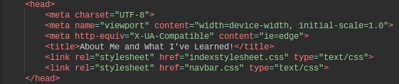
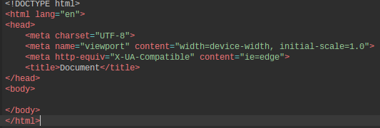
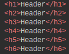
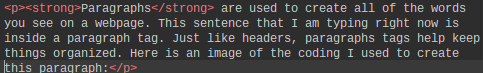
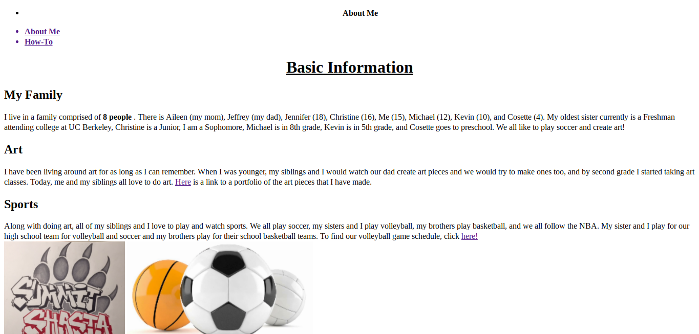
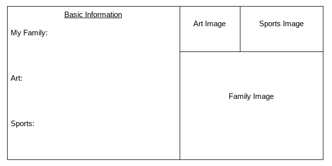
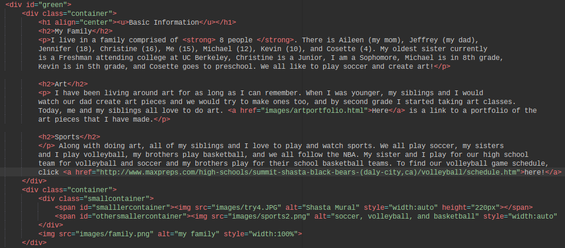
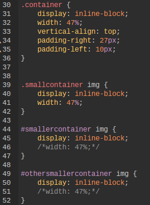
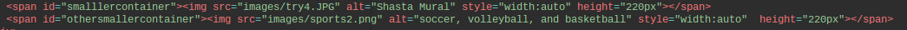

- About Me How-To
You will create your very own "About Me" page that will give some basic information about you
and what general/thinking skills you have obtained from programming.
The "About Me" page you will create will use HTML (Hypertext Markup Language) and CSS (Cascading Style Sheet) to create something like this...
The head of HTML contains the basic information of the webpage, including the title, meta information, internal styling, links to external styling, etc. It is important to have a head in your code because it is how people find your page! Other programmers and search engines look at the information in your head to see if your page is what they are looking for. In my "About Me" page, my head element included my title, meta information, and links to my external styling sheet. Here is an image of the head for my "About Me" page:
The body goes right after the head and it contains all of the visual information of your webpage. This includes headers, paragraphs, tables, lists, images, and anything else that appears on a webpage. Here is an example of the general, basic structure of a head and body element:
Here is a closer look at a head element and a body element:
Headers range from h1-h6. H1 headers are the largest and most important while h6 headers are the smallest. In my "About Me" website, I used the h1 headers for the three main sections of my page: basic information, programming overview, and takeaways from programming. Then, for the subsections, I worked my way into the h2 and h3 tags. When you create your website, start the main ideas with an h1 header. Once you get into the individual sections, start with an h2 headers, then h3 headers, then h4 headers, and so on. Headers are useful for organizing your content in a visually appealing way! To make a header element, create an opening header tag and a closing header tag. Then, put your header in the middle. It should look something like this:
Here is the code that made the headers:
Paragraphs are used to create all of the words you see on a webpage. This sentence that I am typing right now is inside a paragraph tag. Just like headers, paragraphs tags help keep things organized. For my "About Me" page, all of the text that is visible, with the exception of headers, was made out of paragraph tags. Here is an image of the coding I used to create this paragraph:
Just like all other tags, paragraph tags start with an opening and an closing tag. The opening tag for paragraphs is made of two angle brackets with the "p" (which stands for paragraph) in the middle. A closing tag for a paragraph is almost identical to an opening tag; the only difference is that it has a forward slash before the "p". Here is a closer look at what an opening and closing paragraph tag looks like:
Images!Images are a great way for you to help your viewers/readers make stronger connections. After all, a picture does say a thousand words! To insert an image into your code with an <img> tag. <img> tags only contain attributes and, therefore, do not have a closing tag. An attribute is what determines the property of an element. Attributes used for images mainly include the source (src=""), the height (height="") or width (width=""), alternative text when the image cannot load (alt=""), and any other styling that may be added to the image to enhance the look of the webpage. Let's take a look at how each attribute plays its role into creating an image... |
The Source Attribute<img src="aboutme.jpg" height="250px" alt="this is my about me page"> The source attribute is essentially what links the image into the webpage; once you insert the source attribute, the image appears on the webpage and all that's left to do is add style! |
The Height/Width Attribute<img src="aboutme.jpg" height/width="250px" alt="this is my about me page"> The height/width attribute modifies the height/width of the image. When inserting the height/width attribute, you only need to specify the length of the height or the length of the width. This is because if you specify the length of one, the other will automatically change accordingly in order to maintain the aspect ratio (the ratio of the width to the height of an image). Not all images are in the exact dimensions you will need them to be to fit your page which is why height/width attributes come in handy! |
The Alternative Attribute<img src="aboutme.jpg" height/width="250px" alt="this is my about me page"> The alternative attribute is very important in making image tags because if something goes wrong and the image cannot be loaded, or if someone cannot see the picture, then the alternative text is what the viewer would see instead. If there is no image and no alternative text, then all that's left is a poorly-designed looking page. To make an alternative attribute, simply type "alt", an equals sign, and some text describing what should be depicted in quotation marks. |
Once you have the bare-bone structure of your website (HTML), you now get to decide how you want to design your "About Me" webpage. We can do this through CSS (Cascading Style Sheet). CSS describes how the elements that you coded are going to appear to the viewer, meaning it will decide the color, size, shape, effects, and the overall format of your entire webpage. In my "About Me" webpage, I used CSS to give my website a background, borders, and color. Below is an image of my webpage before and after I added CSS. Notice how without CSS images cannot be positioned, navigation bars become bland list items, and the page overall looks duller. With CSS, key points can stand out to build understanding and the whole webpage itself just looks more appealing. Once you finish reading this How-To page, you should be able to turn your bland webpage into a colorful, organized page about you!
There are many ways to utilize the background property, and the two functions of it that I mainly used to enhance my webpage were background images and background color.
To create a background image for any element (this includes anything from the whole background of a webpage to the background of a paragraph), you would first find an image/pattern that you like. From there, you would copy the image url, do the following code in your CSS, and add it onto your webpage. One decision I made while finding an image was that I wanted to keep the background simple to put emphasis on the actual content of my webpage. Here is the skeleton structure of the code to create a background image for your "About Me" page:
body {background-image: url(PASTEURLHERE.JPG);
For my "About Me" page, I selected an elephant pattern and I was able to turn a plain, white background into a themed background. The following is the code that I used:
body {background-image: url(images/elephants.jpg);
To make any background of an element a color, you would first find a color selector tool (you can search up "css color selector" on google) and find a color that you like. For my "About Me" page, I selected a color with a 50% opacity to help the words and images I had stick out and be easier to read. Here is the skeleton structure of the code to create a background color for your "About Me" page:
element {background-color: color;
Here is the code I used to create a transparent color with rgba in order to make my words stand out:
selector {background-color: rgba(247, 247, 247, 0.5);
Note how, in contrast to the normal colors of CSS, my code has rgba. The "a" stands for alpha and allows you to adjust the opacity.
When using borders in CSS, there are a handful of things you should identify in your code: color, width, and style.
To make any background of a border (or really any element) a color, you would first find a color selector tool (you can search up "css color selector" on google) and find a color that you like. For my "About Me" page, I used background-color to fill in the blocks of text to help the words and images stand out. To do this, I selected a color with a 50% opacity. Here is the skeleton structure of the code to create a background color for your "About Me" page:
element {background-color: color;}
Here is the code I used to create a transparent color with rgba in order to make my words stand out:
selector {background-color: rgba(247, 247, 247, 0.5);}
Note how, in contrast to the normal colors of CSS, my code has rgba. The "a" stands for alpha and allows you to adjust the opacity as well.
When you change the width of the border, you change the thickness of it. One way to utilize this is to make the more important information in thicker borders and the less important information in thinner borders. In my "About Me" page, I made all of my borders 10px thick, and then I made everything within the borders have a border width of 2px. Here is the basic structure to style the border width:
element {border-width: __px;}
Here is the specific code that I used to modify the width of my borders to 10px:
#green {border-width: 10px;}
Borders don't stop with just color and width, you can also change the style! Some style types you may come across are dotted, dashed, solid, double, ridge, and maybe even no border. In my webpage, I used the ridge border to make my information standout and to add more form to the webpage. Here is the basic structure you can use to add style to your borders:
element {border-style: dotted/dashed/solid/double/ridge;}
Here is the code that I used to create my ridge borders:
element {border-style: ridge;}
One key thing that you will want to remember is the function of DIVS. Divs, in short, are basically a way to organize your page. When you put something into a <div> tag, nothing visibly changes on your webpage; however, when you are incorporating style into your webpage, divs separate what is and is not being styled. One specific function of a div that I would highlight is its use in putting things next to each other. To demonstrate to you the power of divs, I will take you through the 3-step process that I took in creating the format of the "Basic Information" part of my "About Me" page.
Give everything a div. In my case, it was my 3 paragraphs combined into one div and three images with their own individual divs. After giving each individual component a div, put all of the components on the left side their own div, and all of the components on the right side their own div. Here is an image of the planning that I did to help you visualize what the end result will look like:
I would have each image being its own div, and then I would put all of the divs on the right side in one div and all of the divs on the left side in a separate div. Also, if you look at the organization of the two photos on the top, they are next to eachother and, therefore, need to be grouped together. I did this using <span> tags. Span tags are like divs except they are a way of grouping things inline. Here is what the code looked like:
Right now, you have only put div tags into your code, so there should not be any visual differences on your webpage--this is where CSS comes in. The first thing to add into your external CSS file is the code for "display:inline-block". Using the syntax that you have already learned, your selector would be the class that all the elements were under (classes are a way of organizing elements into groups so that the styling will only apply to them), the key would be "display" and your value would be "inline-block". "Display: inline-block" will display the elements on the same line in comparison to its default display where the next element goes on the next line. This should put the images and the text next to eachother, however, if your images and text are still on different lines, add "width: 47%" to make each element take up less than half of the page and they will, therefore, fit in one line. Although your text and images are next to eachother, your images will still be in a line, and we want it to be two one the top and one on the bottom (check planning visual if you needed a reference). To do this, we need to essentially divide the right half into two sections--this is where the spans and divs for each individual image comes in handy. Using the class selector you used to group the top two images together, create CSS that says "display: inline block; width: 47%". Repeat this process for both spans. This should end up with two images on top and one on the bottom. Here is an image of the CSS styling that I used:
This last step was one of the hardest for me. Because all of my images had different proportions, they were not able to fit into their own box without getting stretched vertically/horizontally. If you run/ran into this problem, there is a solution! With the help of Mr. Hesby, I figured out the problem was the width was fixed at 47% in my CSS, affecting the aspect ratio. To fix this, we set the width to "auto" instead of "47%" and did inline-styling on the images to match the heights at 220px. Once you complete the inline styling, you are done! Here is a close up of the inline-styling that I put into my "About Me" page:
